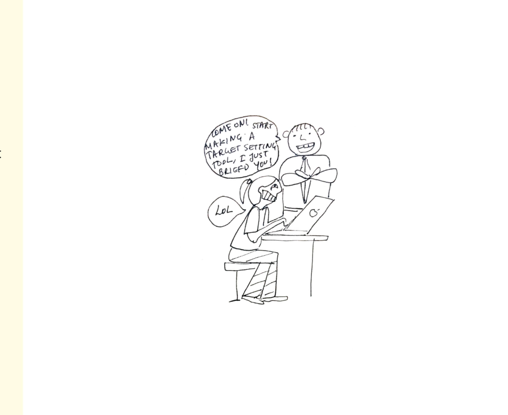
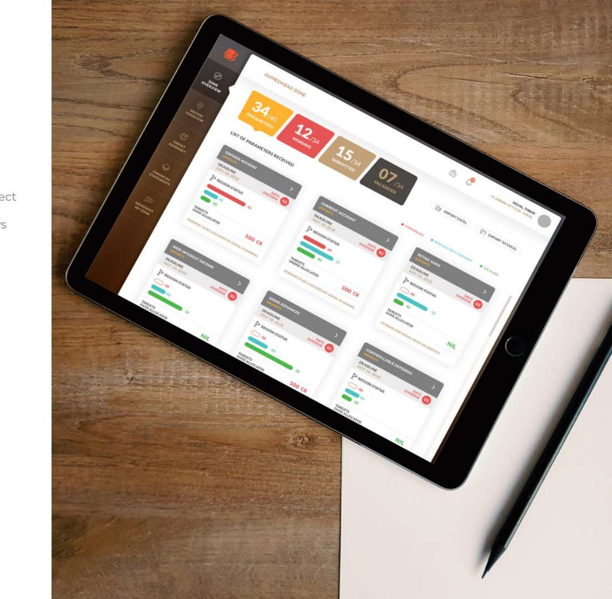
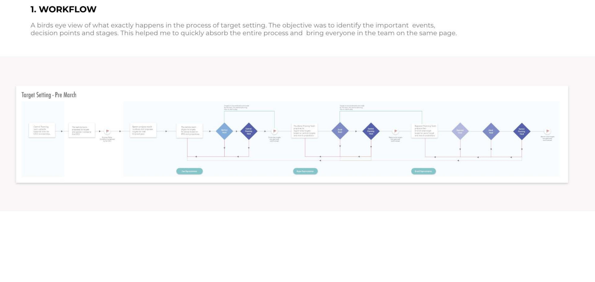
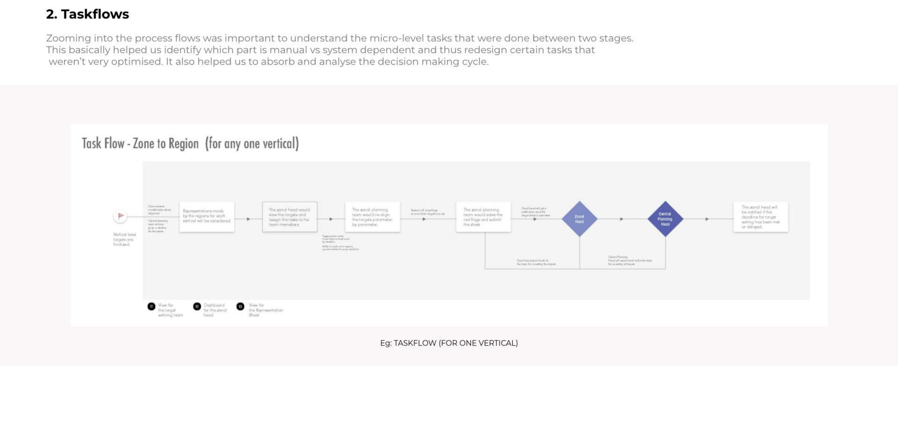
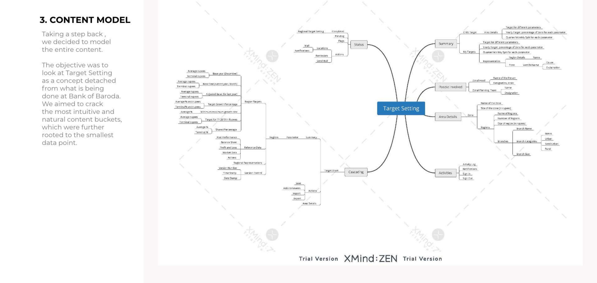
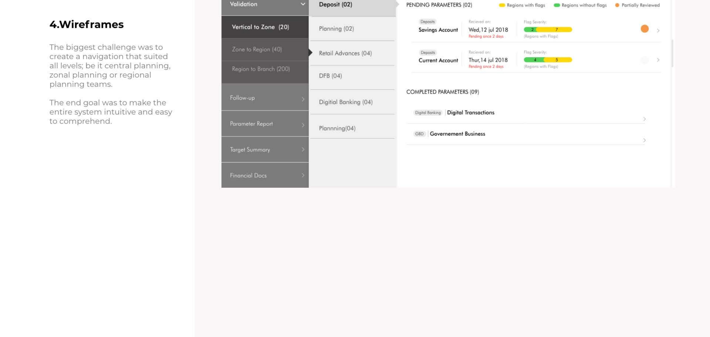
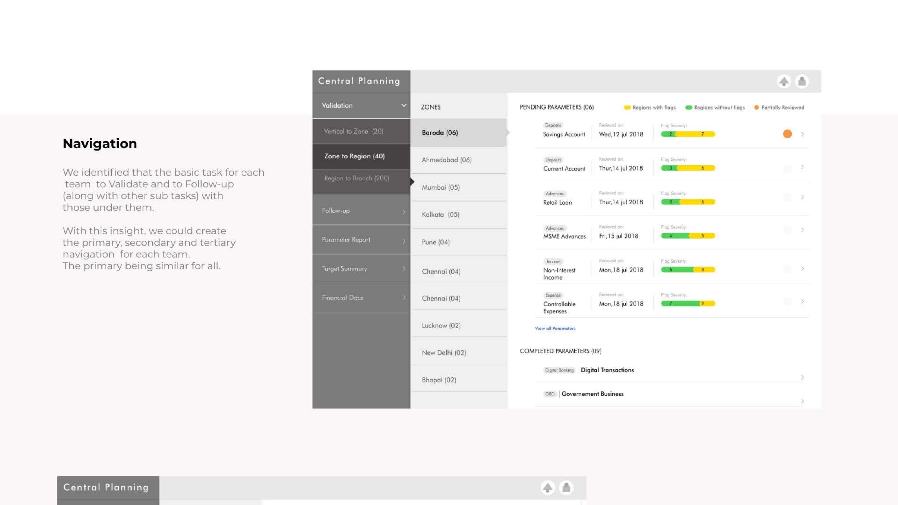
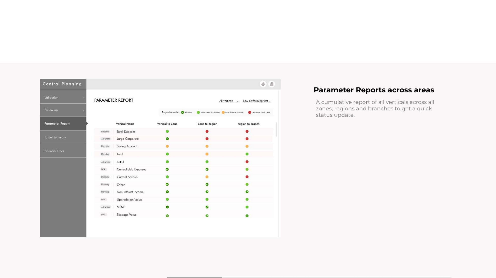
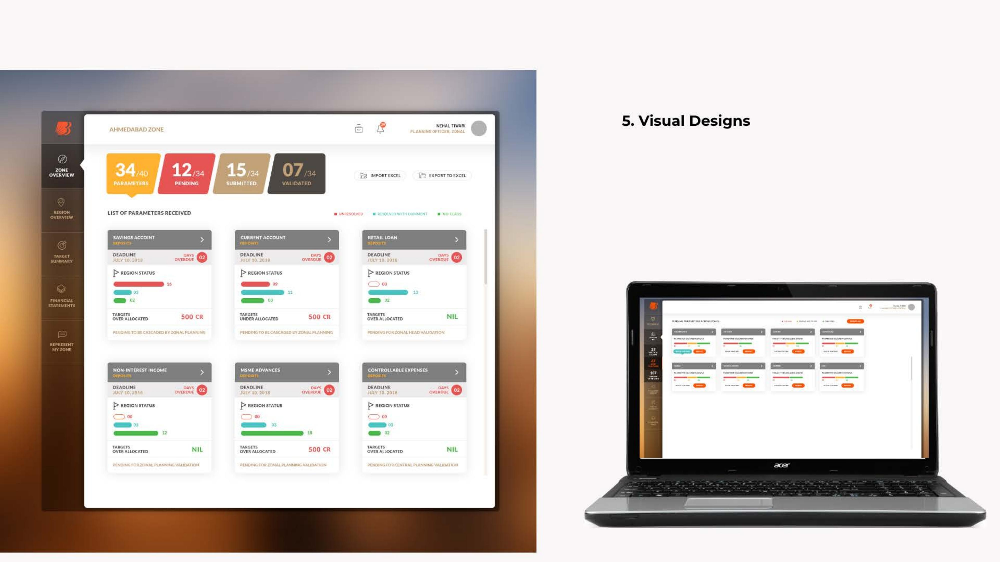

Sparsh+: replacing a bank's spreadsheets with a connected target-setting platform

About
BOB envisioned replacing their existing Excel sheets with a more advanced tool that could assimilate and interpret data, connecting an entire ecosystem that was currently working in silos. The goal was to eliminate errors and delays in yearly target setting, across every vertical and every level.
The Brief
To design a centrally connected, multi-faceted target-setting tool for the entire ecosystem — branch to zone, zone to region, and region to vertical and central planning.

Our Design Process
Despite limited time, we decided to understand the process completely by creating process flow documents and analysing the nature of content this system would hold. Although this took up some time initially, it really eased the process for us toward the end.
1. Workflow
A bird's-eye view of what exactly happens in the process of target setting. The objective was to identify the important events, decision points, and stages — this helped me quickly absorb the entire process and bring everyone on the team onto the same page.

2. Taskflows
Zooming into the process flows was important to understand the micro-level tasks happening between two stages. This helped us identify which parts were manual versus system-dependent, and thus redesign certain tasks that weren't very optimised — while also helping us absorb and analyse the decision-making cycle.

3. Content Model
Taking a step back, we decided to model the entire content. The objective was to look at target setting as a concept detached from what was currently being done at Bank of Baroda — cracking the most intuitive and natural content buckets, rooted down to the smallest data point.

4. Wireframes
The biggest challenge was creating a navigation that suited all levels — be it central planning, zonal planning, or regional planning teams. The end goal was to make the entire system intuitive and easy to comprehend.

Navigation, Monitoring & the Cascading Sheet
We identified that the basic task for every team was to validate and follow up with those under them — with this insight, we created primary, secondary, and tertiary navigation for each team, keeping the primary navigation consistent across all of them. A simple listing gave an at-a-glance idea of how much work was pending versus completed, in a specific branch or region. The cascading sheet needed to be a lot more dynamic — the space where teams set their yearly targets, considering past performance and other important context — so we made it comprehensive by providing every feature in one space.

Parameter Reports & Status Tracking
A cumulative report across all verticals, zones, regions, and branches gave a quick status update at a glance. Each level had multiple roles, and their view was divided according to what was completed and what was pending at each stage — received, pending, submitted, and cascaded.

Visual Design


What I Took Away
What looked like it could be wrapped up in three days turned into a project that touched every level of a banking ecosystem — branch, zone, region, and central planning — each with their own way of working. Building a navigation and a cascading sheet flexible enough to serve all of them, without flattening what made each team's process work, was the real design problem hiding underneath a "simple" target-setting tool.